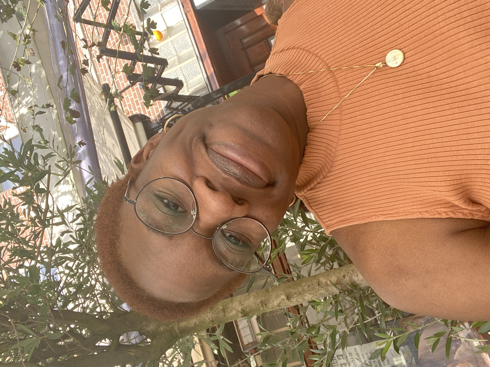

My name is Kunmi Shonubi and I'm 22.
Some fun facts about me are:
I've just finished my undergraduate degree at the University of Edinburgh. I completed a degree in Law and particularly enjoyed Media Law, which made me decide to pursue a Masters here at Leiden. I hope to expand my knowledge of media and the industry.
In terms of languages, I only speak 2 fluently:
| Prior Knowledge | Expectations |
| The current state of my technical skills includes referencing and academic writing, namely the ability to write a dissertation. I have no coding or programming language skills whatsoever. | I expect to at least learn basic HTML skills. |
I love to read (like most other people on this course) and I also enjoy rock climbing, aerial hoop and watching anime. A couple of shows and books I would recommend are:
| Books | Shows |
|
|